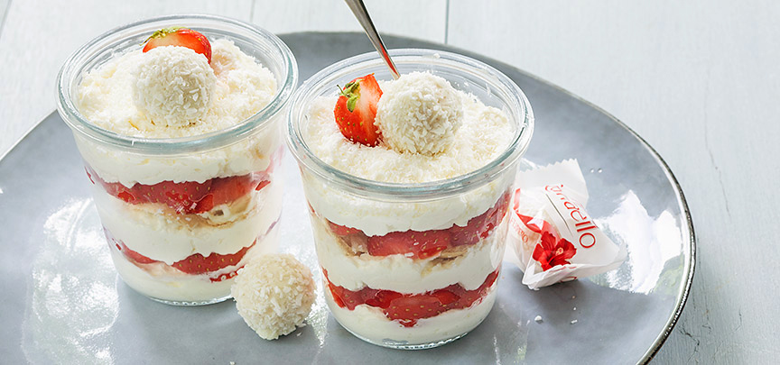

Raffaello toetje in een glaasje
Super makkelijk dessert met kokosroom, aardbeien en Raffaello in een glaasje, een lekkere combinatie dat er ook nog eens heel leuk uitziet en klaar is in 20 minuten
Ingredienten
- 250 ml slagroom
- 250 ml mascarpone
- 2 eetlepels suiker
- 2 eetlepels geraspte kokos + garnering
- 12 balletjes Raffaello (1 doosje)
- 250 gr aardbeien
- Klop de slagroom lobbig
- voeg dan de mascarpone, suiker en 2 eetlepels geraspte kokos toe en klop dan geheel stijf
- Neem 4 glaasjes en verdeel een beetje van het kokos roommengsel over de bodem
- Snijd de aardbeien in stukken
- Bewaar 4 balletjes Raffaello en snijd ook de rest in vieren
- Verdeel wat van de stukjes Rafaello en aardbeien over de room
Maak zo nog een laag van room, Rafaello en aardbeien- eindig met een laag room.
- Bestrooi deze met wat kokosrasp en leg het overgebleven balletje Raffaello bovenop
- steek er nog een stukje aardbei in
